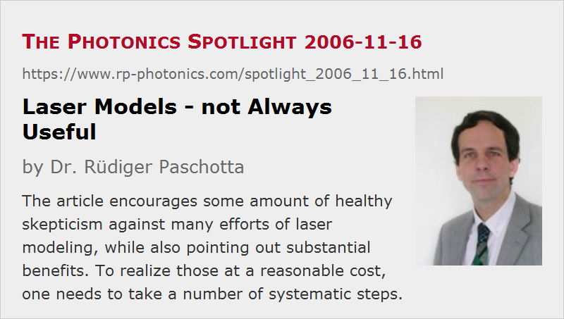

Laser Models - not Always Useful
Posted on 2006-11-16 as a part of the Photonics Spotlight (available as e-mail newsletter!)
Permanent link: https://www.rp-photonics.com/spotlight_2006_11_16.html
Author: Dr. Rüdiger Paschotta, RP Photonics Consulting GmbH
Abstract: The article encourages some amount of healthy skepticism against many efforts of laser modeling, while also pointing out substantial benefits. To realize those at a reasonable cost, one needs to take a number of systematic steps.

Ref.: encyclopedia article on laser modeling; web page on modeling of optical devices and systems
There are many scientific papers reporting some kind of analytical or numerical model of a laser device (or a fiber amplifier, parametric oscillator, etc.). A lot of equations are presented, the model is explained, some numbers (sometimes of unclear origin – fitted values? fudge factors?) are plugged in, and in the end there are some graphs demonstrating “excellent agreement of the model with the measured laser performance”. The latter often appears to be considered as the final goal. Very frequently, however, there could hardly be a favorable answer to the question: What have we actually learned from the model? This may be a nasty question, but it is obviously essential.
While a critical look at each proposed model is certainly advisable, one should not generally dismiss the possibility that an analytical or numerical model can be very useful. Imagine how much faster and cheaper a model can be for testing certain assumptions or ideas, compared with experimental tests. With a model one can also often do such things in a more reliable way, as it makes it easy to modify one parameter without affecting several others, and gives insight into parameters which can hardly be measured. And there is often hardly a better way to obtain a deep understanding of the workings of a device than “experimenting” with a good model.
In order to really get the potentially great benefits at a reasonable cost, a number of steps have to be taken. One should always begin by formulating a set of concrete questions which one hopes to clarify. (For example: Is it possible that effect X is responsible for observation Y? Will measure Z cure the problem? At which power level will effects L limit the performance?) Second, one needs to judge whether there is a kind of model which has a chance to reliably answer these questions, and what the estimated effort of realization is. Third, the model has to be put together, possibly including a numerical realization on the computer. Fourth, certain tests are required for validation of the model. Finally, the model can be applied to answer the original questions, to improve the general understanding e.g. of limiting effects, etc. Having this procedure in mind, one easily understands (a) that many modeling attempts fail because some of the described steps are not (or not properly) carried out, and (b) that it takes a fair amount of experience to efficiently do such a job; it is usually not an issue for Friday afternoon.
This article is a posting of the Photonics Spotlight, authored by Dr. Rüdiger Paschotta. You may link to this page and cite it, because its location is permanent. See also the RP Photonics Encyclopedia.
Note that you can also receive the articles in the form of a newsletter or with an RSS feed.
Questions and Comments from Users
Here you can submit questions and comments. As far as they get accepted by the author, they will appear above this paragraph together with the author’s answer. The author will decide on acceptance based on certain criteria. Essentially, the issue must be of sufficiently broad interest.
Please do not enter personal data here; we would otherwise delete it soon. (See also our privacy declaration.) If you wish to receive personal feedback or consultancy from the author, please contact him e.g. via e-mail.
By submitting the information, you give your consent to the potential publication of your inputs on our website according to our rules. (If you later retract your consent, we will delete those inputs.) As your inputs are first reviewed by the author, they may be published with some delay.
|  |
If you like this page, please share the link with your friends and colleagues, e.g. via social media:
These sharing buttons are implemented in a privacy-friendly way!